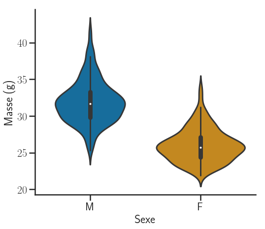
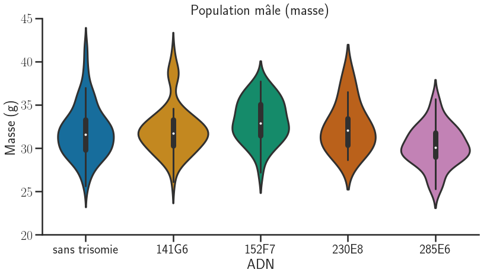
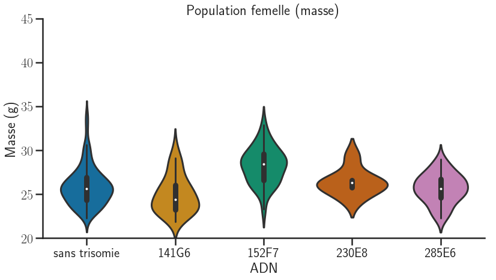
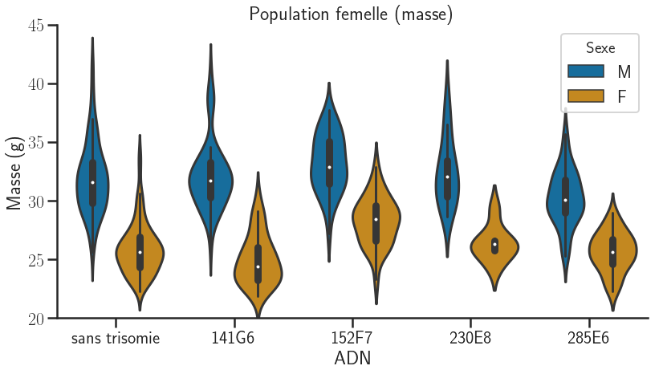
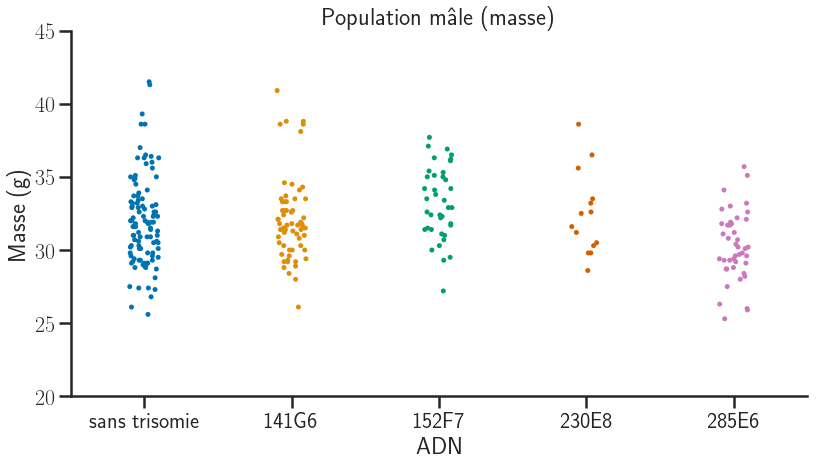
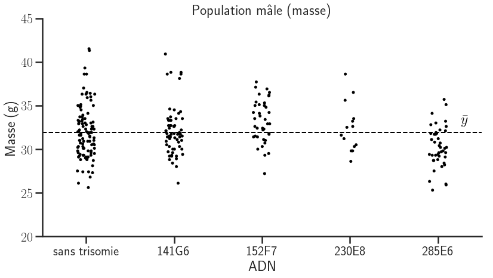
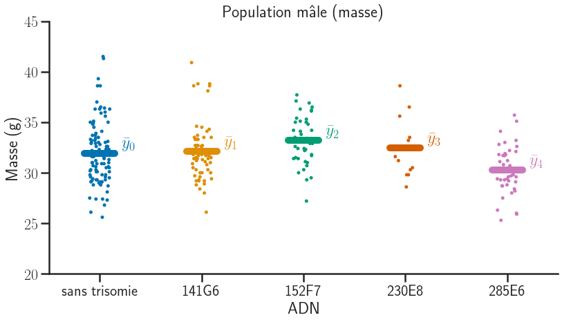
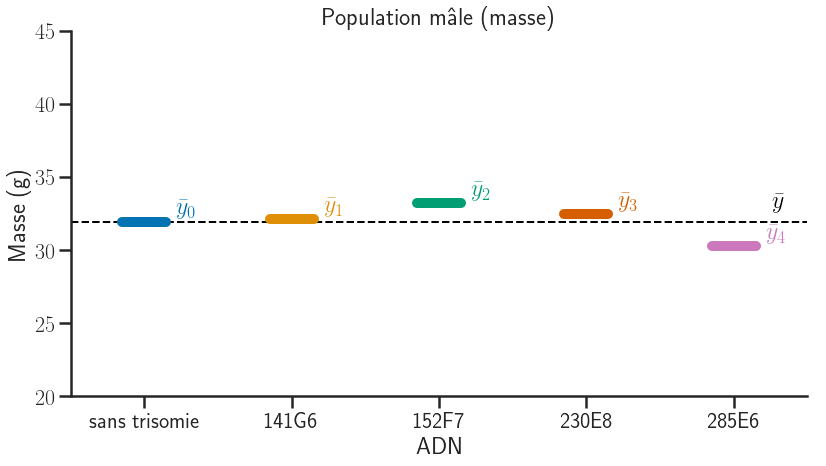

import platform
import numpy as np
import pandas as pd
import matplotlib.pyplot as plt
import sys
from download import download
import seaborn as sns
import statsmodels.api as sm
from statsmodels.formula.api import ols
from statsmodels.stats.api import anova_lm
from scipy.stats import t, f
from ipywidgets import interact, IntSlider, FloatLogSlider # widget manipulationHLMA408: Anova
Auteur: Joseph Salmon joseph.salmon@umontpellier.fr
Introduction et présentation
Import des packages usuels
Commande “magique” pour un affichage plus avancé en Jupyter
%matplotlib inlinePréparation pour l’affichage graphique et sauvegarder les images
# saving tools for the course:
sns.set_context("poster", font_scale=1)
sns.set_style("ticks")
sns.set_palette("colorblind")
# colors
brown = (0.64, 0.16, 0.16)
purple = (148. / 255, 0, 211. / 255)
dirname = "../prebuiltimages/"
imageformat = ".pdf"Syndrome Down et souris génétiquement modifiées
Description des données:
“This dataset is found from http://www.stat.berkeley.edu/users/statlabs/labs.html. It accompanies the excellent text Stat Labs: Mathematical Statistics through Applications Springer-Verlag (2001) by Deborah Nolan and Terry Speed.”
Plus de détails: https://www.stat.berkeley.edu/users/statlabs/papers/sample.pdf (notamment sur les biais de collectes des données…)
Description des variables:
- DNA: le fragment d’ADN inséré dans la souris ancêtre 1=141G6, 2=152F7, 3=230E8 et 4=285E6
- line: la lignée, e.g. #50-69-29
- tg: Transgénique (1= Vrai, 0= faux)
- sex: Sexe de la souris: 1=mâle, 0=femelle
- age: Âge de la souris (en jours) lors de la pesée
- weight: Masse de la souris (en grammes), arrondi à 0.1 gramme
- cage: Numéro de la cage dans laquelle la souris habitait
Téléchargement et import pour sauvegarder les données
# to use the default values of utils for instance
Eleve = False # à changer en True pour un étudiant
title_font = {'size': '16'}
axis_font = {'size': '14'}
if not Eleve:
from matplotlib import rc
rc('text', usetex=True)
font = {'family': 'sans-serif'}
rc('font', **font)
saving = True
from download import download
from utils import my_saving_display
else:
saving = Falsepath_target = "./utils.py"
url_shared_files = "http://josephsalmon.eu/enseignement/Montpellier/HLMA408/sharedcode/utils.py"
download(url_shared_files, path_target, replace=False)Replace is False and data exists, so doing nothing. Use replace==True to re-download the data.'./utils.py'Téléchargement et import des données
url = "http://josephsalmon.eu/enseignement/datasets/mouse.data"
# url = "http://www.stat.berkeley.edu/users/statlabs/data/mouse.data" # backup url, without header.
path_target = "./mouse.data"
download(url, path_target, replace=False)Replace is False and data exists, so doing nothing. Use replace==True to re-download the data.'./mouse.data'df_mouse = pd.read_csv("mouse.data", sep='\s+')
df_mouse.tail(n=10)| DNA | line | tg | sex | age | weight | cage | |
|---|---|---|---|---|---|---|---|
| 522 | 4 | #84-35-72 | 1 | 0 | 119 | 23.3 | 97 |
| 523 | 4 | #84-35-84 | 1 | 0 | 120 | 25.5 | 98 |
| 524 | 4 | #84-35-85 | 1 | 0 | 120 | 25.7 | 98 |
| 525 | 4 | #84-35-86 | 0 | 0 | 120 | 24.8 | 98 |
| 526 | 4 | #84-35-87 | 0 | 0 | 120 | 26.6 | 98 |
| 527 | 4 | #84-35-88 | 0 | 0 | 120 | 26.1 | 98 |
| 528 | 4 | #84-35-89 | 0 | 0 | 120 | 24.4 | 98 |
| 529 | 4 | #84-35-90 | 1 | 0 | 120 | 26.1 | 98 |
| 530 | 4 | #84-35-91 | 0 | 0 | 120 | 26.1 | 98 |
| 531 | 4 | #84-35-92 | 0 | 0 | 120 | 25.4 | 98 |
df_mouse['DNA'] = df_mouse['DNA'] * df_mouse['tg']
G = len(df_mouse['DNA'].unique())
list_gene = ['sans trisomie', '141G6', '152F7', '230E8', '285E6']
df_mouse['DNA'] = df_mouse['DNA'].replace(
[0, 1, 2, 3, 4], list_gene)
df_mouse['sex'] = df_mouse['sex'].replace([1, 0], ['M', 'F'])
df_mouse.rename({'weight': 'Masse', 'sex': 'Sexe', "DNA": "ADN" }, axis=1, inplace=True)print("Nombre de modalités : {}".format(G))Nombre de modalités : 5gp = df_mouse.groupby('Sexe')
df_male_mouse = gp.get_group(name='M')
df_male_mouse.tail()
df_female_mouse = gp.get_group(name='F')
df_female_mouse.tail()| ADN | line | tg | Sexe | age | Masse | cage | |
|---|---|---|---|---|---|---|---|
| 527 | sans trisomie | #84-35-88 | 0 | F | 120 | 26.1 | 98 |
| 528 | sans trisomie | #84-35-89 | 0 | F | 120 | 24.4 | 98 |
| 529 | 285E6 | #84-35-90 | 1 | F | 120 | 26.1 | 98 |
| 530 | sans trisomie | #84-35-91 | 0 | F | 120 | 26.1 | 98 |
| 531 | sans trisomie | #84-35-92 | 0 | F | 120 | 25.4 | 98 |
fig = sns.catplot(x='Sexe', y="Masse", data=df_mouse,
kind='violin', legend_out=False, height=8.5)
fig.set(ylabel=("Masse (g)"))
fig.fig.set_figwidth(8)
fig.fig.set_figheight(7)
plt.tight_layout()
plt.show()
my_saving_display(fig, dirname,
"violin_mouse_by_sex", imageformat, saving=saving)
# cf: cmdlinetips.com/2019/03/catplot-in-seaborn-python/
fig = sns.catplot(x='ADN', y="Masse", data=df_male_mouse, kind='violin',
legend_out=False, order=list_gene,
height=8.5)
fig.set(ylabel=("Masse (g)"))
fig.fig.set_figwidth(12)
fig.fig.set_figheight(7)
fig.set(ylim=(20, 45))
plt.title('Population mâle (masse)')
plt.tight_layout()
plt.show()
my_saving_display(fig, dirname,
"violin_male_mouse_by_gene", imageformat, saving=saving)
fig = sns.catplot(x='ADN', y="Masse", data=df_female_mouse, kind='violin',
legend_out=False, order=list_gene, height=8.5)
fig.set(ylabel=("Masse (g)"))
fig.fig.set_figwidth(12)
fig.fig.set_figheight(7)
fig.set(ylim=(20, 45))
plt.title('Population femelle (masse)')
plt.tight_layout()
plt.show()
my_saving_display(fig, dirname,
"violin_female_mouse_by_gene", imageformat, saving=saving)
fig = sns.catplot(x='ADN', y="Masse", data=df_mouse, hue="Sexe", kind='violin',
legend_out=False, order=list_gene, height=8.5)
fig.set(ylabel=("Masse (g)"))
fig.fig.set_figwidth(12)
fig.fig.set_figheight(7)
fig.set(ylim=(20, 45))
plt.title('Population femelle (masse)')
plt.tight_layout()
plt.show()
my_saving_display(fig, dirname,
"violin_mouse_by_gene", imageformat, saving=saving)
# cf: cmdlinetips.com/2019/03/catplot-in-seaborn-python/
np.random.seed(42)
fig = sns.catplot(x='ADN', y="Masse", data=df_male_mouse, jitter='0.1',
legend_out=False, order=list_gene, height=8.5)
fig.set(ylabel=("Masse (g)"))
fig.fig.set_figwidth(12)
fig.fig.set_figheight(7)
fig.set(ylim=(20, 45))
plt.title('Population mâle (masse)')
plt.tight_layout()
plt.show()
my_saving_display(fig, dirname,
"jitter_male_mouse_by_gene", imageformat, saving=saving)
np.random.seed(42)
mean_tot = df_male_mouse['Masse'].mean()
fig = sns.catplot(x='ADN', y="Masse", data=df_male_mouse, jitter='0.1',color='k',
legend_out=False, order=list_gene, height=8.5)
fig.set(ylabel=("Masse (g)"))
fig.fig.set_figwidth(12)
fig.fig.set_figheight(7)
fig.set(ylim=(20, 45))
fig.set(xlim=(-0.5, 4.5))
centers = fig.ax.get_xticks()
# centers = [0.1, 0.3, 0.5, 0.7, 0.9]
centers_axhline = np.linspace(1 / (2 * G), 1-1 / (2 * G), num=G)
plt.axhline(y=mean_tot, xmin=0, xmax=1, ls='--', linewidth=2, color = 'k')
plt.text(centers[4] + 0.35, mean_tot * 1.02, '$\\bar y$', color='k',
verticalalignment='bottom', horizontalalignment='right')
plt.title('Population mâle (masse)')
plt.tight_layout()
plt.show()
my_saving_display(fig, dirname,
"jitter_male_mouse_by_gene_mean", imageformat, saving=saving)
# Calculs des moyennes /effectifs par classes
n_samples = df_male_mouse.groupby('ADN')['Masse'].count()
means = df_male_mouse.groupby('ADN')['Masse'].mean()
sigma2s = df_male_mouse.groupby('ADN')['Masse'].var(ddof=1)current_palette = sns.color_palette()
np.random.seed(42)
fig = sns.catplot(x='ADN', y="Masse", data=df_male_mouse, jitter='0.1',
legend_out=False, order=list_gene, height=8.5)
fig.set(ylabel=("Masse (g)"))
fig.fig.set_figwidth(12)
fig.fig.set_figheight(7)
fig.set(ylim=(20, 45))
fig.set(xlim=(-0.5, 4.5))
plt.title('Population mâle (masse)')
delta = 0.03
for i, center in enumerate(centers_axhline):
plt.axhline(y=means[list_gene[i]],
xmin=center - delta, xmax=center + delta, ls='-', linewidth=10, color=current_palette[i])
plt.text(i + 0.35, means[list_gene[i]]*0.998, '$\\bar y _{}$'.format(i),
color=current_palette[i], verticalalignment='bottom', horizontalalignment='right')
plt.tight_layout()
plt.show()
my_saving_display(fig, dirname,
"jitter_male_mouse_by_gene_with_means", imageformat, saving=saving)
np.random.seed(42)
fig = sns.catplot(x='ADN', y="Masse", data=df_male_mouse, jitter='0.1',
legend_out=False, order=list_gene, height=8.5,color='w',alpha=0)
plt.axhline(y=mean_tot, xmin=0, xmax=1, ls='--', linewidth=2, color='k')
plt.text(centers[4] + 0.35, mean_tot * 1.02, '$\\bar y$', color='k',
verticalalignment='bottom', horizontalalignment='right')
plt.title('Population mâle (masse)')
fig.set(ylabel=("Masse (g)"))
fig.fig.set_figwidth(12)
fig.fig.set_figheight(7)
fig.set(ylim=(20, 45))
fig.set(xlim=(-0.5, 4.5))
for i, center in enumerate(centers_axhline):
plt.axhline(y=means[list_gene[i]],
xmin=center - delta, xmax=center + delta, ls='-', linewidth=10, color=current_palette[i])
plt.text(i + 0.35, means[list_gene[i]]*0.998, '$\\bar y _{}$'.format(i),
color=current_palette[i], verticalalignment='bottom', horizontalalignment='right')
plt.tight_layout()
plt.show()
my_saving_display(fig, dirname,
"jitter_male_mouse_by_gene_only_means", imageformat, saving=saving)
Tests
# Pour n'afficher que 3 chiffres après la virgule en Pandas
pd.options.display.float_format = '{:20,.3f}'.format# Extraction de la base des mâles pour l'ADN et la masse:
df_for_anova = df_male_mouse[["ADN", "Masse"]]df_for_anova| ADN | Masse | |
|---|---|---|
| 0 | 230E8 | 31.600 |
| 1 | 230E8 | 31.200 |
| 2 | 230E8 | 28.600 |
| 3 | sans trisomie | 30.100 |
| 4 | sans trisomie | 31.300 |
| 5 | sans trisomie | 36.400 |
| 6 | 230E8 | 36.500 |
| 7 | 230E8 | 29.800 |
| 8 | 230E8 | 35.600 |
| 9 | 230E8 | 33.500 |
| 10 | 230E8 | 38.600 |
| 11 | sans trisomie | 34.100 |
| 12 | 230E8 | 32.500 |
| 13 | 230E8 | 30.300 |
| 14 | sans trisomie | 29.400 |
| 15 | sans trisomie | 34.800 |
| 16 | 230E8 | 33.200 |
| 17 | 230E8 | 30.500 |
| 18 | 230E8 | 32.600 |
| 19 | sans trisomie | 30.300 |
| 20 | 230E8 | 29.800 |
| 37 | 141G6 | 31.200 |
| 38 | 141G6 | 28.400 |
| 39 | 141G6 | 30.800 |
| 40 | 141G6 | 30.300 |
| 41 | 141G6 | 30.500 |
| 42 | 141G6 | 31.400 |
| 43 | 141G6 | 29.700 |
| 44 | 141G6 | 31.000 |
| 45 | 141G6 | 30.300 |
| ... | ... | ... |
| 416 | sans trisomie | 32.300 |
| 417 | 285E6 | 33.000 |
| 418 | 285E6 | 28.400 |
| 419 | sans trisomie | 32.200 |
| 420 | sans trisomie | 31.400 |
| 421 | 285E6 | 30.800 |
| 476 | sans trisomie | 36.000 |
| 477 | sans trisomie | 35.900 |
| 478 | 285E6 | 34.100 |
| 479 | sans trisomie | 33.000 |
| 480 | sans trisomie | 36.300 |
| 481 | sans trisomie | 38.600 |
| 482 | sans trisomie | 39.300 |
| 483 | 285E6 | 29.600 |
| 484 | sans trisomie | 30.200 |
| 485 | 285E6 | 33.200 |
| 486 | 285E6 | 29.700 |
| 487 | 285E6 | 29.200 |
| 488 | 285E6 | 32.800 |
| 489 | 285E6 | 32.200 |
| 490 | sans trisomie | 29.200 |
| 491 | sans trisomie | 32.000 |
| 492 | 285E6 | 30.200 |
| 493 | sans trisomie | 31.800 |
| 494 | 285E6 | 31.100 |
| 495 | sans trisomie | 30.300 |
| 496 | sans trisomie | 32.800 |
| 497 | 285E6 | 31.200 |
| 498 | sans trisomie | 28.700 |
| 499 | 285E6 | 28.200 |
265 rows × 2 columns
Choix de la classe de référence
Pour faire un moindre carré ou un anova avec des variables catégorielles il faut retirer une catégorie qui sera donc la catégorie de référence. Pour forcer cela on peut utiliser: https://patsy.readthedocs.io/en/latest/API-reference.html#patsy.Treatment
Dans notre cas, il faut enlever la modalité “sans trisomie” ce qui est fait ci-dessous.
Remarque: sans cela l’ordre lexicographique (i.e., l’ordre utiliser dans un dictionnaire) est pris en compte et ce serait “141G6” qui serait pris comme classe de référence.
# Ajuster le modèle linéaire (oui l'ANOVA est un modèle linéaire)
formula = "Masse ~ C(ADN, Treatment('sans trisomie'))"
lm = ols(formula, df_for_anova).fit()
table = anova_lm(lm)Test de Fisher
On cherche ici à déterminer si la variable “ADN” est explicative pour le poids d’une souris mâle. Dans ce contexte \mathcal{H}_0 correspond à
"\beta_1^\star=\dots=\beta_{G-1}^\star=0"
et donc \mathcal{H}_0 correspond à
\exists g \in \{0,\dots,G-1\} tel que \beta_g^\star \neq0"
print(table) df sum_sq \
C(ADN, Treatment('sans trisomie')) 4.000 191.311
Residual 260.000 2,023.878
mean_sq F \
C(ADN, Treatment('sans trisomie')) 47.828 6.144
Residual 7.784 nan
PR(>F)
C(ADN, Treatment('sans trisomie')) 0.000
Residual nan lm.summary()| Dep. Variable: | Masse | R-squared: | 0.086 |
| Model: | OLS | Adj. R-squared: | 0.072 |
| Method: | Least Squares | F-statistic: | 6.144 |
| Date: | Tue, 21 Apr 2020 | Prob (F-statistic): | 9.72e-05 |
| Time: | 15:53:31 | Log-Likelihood: | -645.40 |
| No. Observations: | 265 | AIC: | 1301. |
| Df Residuals: | 260 | BIC: | 1319. |
| Df Model: | 4 | ||
| Covariance Type: | nonrobust |
| coef | std err | t | P>|t| | [0.025 | 0.975] | |
| Intercept | 31.9276 | 0.272 | 117.262 | 0.000 | 31.391 | 32.464 |
| C(ADN, Treatment('sans trisomie'))[T.141G6] | 0.1708 | 0.442 | 0.386 | 0.700 | -0.700 | 1.042 |
| C(ADN, Treatment('sans trisomie'))[T.152F7] | 1.2826 | 0.523 | 2.452 | 0.015 | 0.252 | 2.313 |
| C(ADN, Treatment('sans trisomie'))[T.230E8] | 0.5224 | 0.794 | 0.658 | 0.511 | -1.041 | 2.086 |
| C(ADN, Treatment('sans trisomie'))[T.285E6] | -1.6811 | 0.505 | -3.328 | 0.001 | -2.676 | -0.686 |
| Omnibus: | 24.202 | Durbin-Watson: | 1.268 |
| Prob(Omnibus): | 0.000 | Jarque-Bera (JB): | 29.526 |
| Skew: | 0.687 | Prob(JB): | 3.88e-07 |
| Kurtosis: | 3.885 | Cond. No. | 5.20 |
Warnings:
[1] Standard Errors assume that the covariance matrix of the errors is correctly specified.
Obtention des statistiques de F-test et des pvaleurs associées
(cf. tableaux ci-dessus aussi)
print("F-statitique donnée par `anova_lm` : {1} et pvaleur associeé {0}".format(
table.loc["C(ADN, Treatment('sans trisomie'))", 'PR(>F)'], table.loc["C(ADN, Treatment('sans trisomie'))", 'F']))F-statitique donnée par `anova_lm` : 6.144261517356432 et pvaleur associeé 9.724809563139953e-05print("F-statitique donnée par `lm` : {1} et pvaleur associeé {0}".format(lm.f_pvalue, lm.fvalue))F-statitique donnée par `lm` : 6.144261517356477 et pvaleur associeé 9.724809563138972e-05# Calcul manuel des F-statistics:
n_tot = n_samples.sum()
print("Nombre d'observations total:{}".format(n_tot))
yhat = lm.predict(df_for_anova)
sigma2_intra = 1/ (G-1) * np.sum((yhat.values - mean_tot)**2)
sigma2_hat = ( 1/ (n_tot - G) * np.sum((yhat - df_for_anova['Masse'])**2))
f_stat = sigma2_intra / sigma2_hat
f_distrib = f(G-1, n_tot-G)
print("F-statistique, calcul manuel: {}".format(f_stat))Nombre d'observations total:265
F-statistique, calcul manuel: 6.144261517356465print(1-f_distrib.cdf(f_stat), f_distrib.sf(f_stat)) # sf = survival function /fonction de survie9.724809563138592e-05 9.724809563139245e-05Conclusion du F-test
compte tenu de la pvalue extrêment faible, on peut rejeter au niveau \alpha=5\%, 1% ou 0.1% l’hypothèse “”
Tests de Student par modalité
On cherche pour chaque g=1,\dots,G-1 à tester
\mathcal{H}_0 : "\beta_g^{\star}=0"
meansADN
141G6 32.098
152F7 33.210
230E8 32.450
285E6 30.247
sans trisomie 31.928
Name: Masse, dtype: float64mean_tot31.9124528301887n_samplesADN
141G6 64
152F7 39
230E8 14
285E6 43
sans trisomie 105
Name: Masse, dtype: int64# Calcul à la main des coefficients
beta_0 = means['sans trisomie']
beta_1 = means['141G6'] - means['sans trisomie']
beta_2 = means['152F7'] - means['sans trisomie']
beta_3 = means['230E8'] - means['sans trisomie']
beta_4 = means['285E6'] - means['sans trisomie']print("Coefficients:")
print("beta_0", "beta_1", "beta_2", "beta_3", "beta_4")
print("{:.3f}, {:.3f}, {:.3f}, {:.3f}, {:.3f}".format(beta_0, beta_1, beta_2, beta_3, beta_4))Coefficients:
beta_0 beta_1 beta_2 beta_3 beta_4
31.928, 0.171, 1.283, 0.522, -1.681# Vérifications avec le modèle lm:
lm.paramsIntercept 31.928
C(ADN, Treatment('sans trisomie'))[T.141G6] 0.171
C(ADN, Treatment('sans trisomie'))[T.152F7] 1.283
C(ADN, Treatment('sans trisomie'))[T.230E8] 0.522
C(ADN, Treatment('sans trisomie'))[T.285E6] -1.681
dtype: float64# Variance par classe:
sigma2sADN
141G6 7.874
152F7 6.014
230E8 8.109
285E6 5.446
sans trisomie 9.280
Name: Masse, dtype: float64Valeur de \hat{\sigma}^2
# Calcul manuel
hatsigma2 = (1 / (n_tot-5)) * np.sum(sigma2s * (n_samples-1))
hatsigma27.7841447026614965# Vérifications avec le modèle lm:
np.sum(lm.resid ** 2) / (n_tot-G)7.784144702661493hatsigma2_beta_0 = hatsigma2 / n_samples['sans trisomie']
hatsigma2_beta_1 = hatsigma2 / n_samples['141G6'] + hatsigma2_beta_0
hatsigma2_beta_2 = hatsigma2 / n_samples['152F7'] + hatsigma2_beta_0
hatsigma2_beta_3 = hatsigma2 / n_samples['230E8'] + hatsigma2_beta_0
hatsigma2_beta_4 = hatsigma2 / n_samples['285E6'] + hatsigma2_beta_0
# Estimation des variances coefficients
hatsigma2_beta_0, hatsigma2_beta_1, hatsigma2_beta_2, hatsigma2_beta_3, hatsigma2_beta_4 (0.07413471145391902,
0.19576197243300492,
0.27372816536831635,
0.6301450473583117,
0.25516133244604683)Calcul des T-statistiques et des pvaleurs
T-statistiques
lm.tvaluesIntercept 117.262
C(ADN, Treatment('sans trisomie'))[T.141G6] 0.386
C(ADN, Treatment('sans trisomie'))[T.152F7] 2.452
C(ADN, Treatment('sans trisomie'))[T.230E8] 0.658
C(ADN, Treatment('sans trisomie'))[T.285E6] -3.328
dtype: float64print(lm.tvalues["Intercept"],
lm.tvalues["C(ADN, Treatment('sans trisomie'))[T.141G6]"],
lm.tvalues["C(ADN, Treatment('sans trisomie'))[T.152F7]"],
lm.tvalues["C(ADN, Treatment('sans trisomie'))[T.230E8]"],
lm.tvalues["C(ADN, Treatment('sans trisomie'))[T.285E6]"])117.26157743626808 0.3860740546929827 2.4515691252105887 0.6580623881464545 -3.328036143952162# Calcul manuel:
print(list_gene)
print(beta_0 / hatsigma2_beta_0**0.5,
beta_1 / hatsigma2_beta_1**0.5,
beta_2 / hatsigma2_beta_2**0.5,
beta_3 / hatsigma2_beta_3**0.5,
beta_4 / hatsigma2_beta_4**0.5)['sans trisomie', '141G6', '152F7', '230E8', '285E6']
117.26157743626808 0.3860740546929837 2.4515691252106087 0.6580623881464894 -3.3280361439521493Pvaleurs
# On peu aussi retrouver plus directement les pvaleurs:
print("Pvaleurs par lm:\n{}".format(lm.pvalues))
print("Pvaleurs manuelles:")
print("beta0:", 2 * min(1-t.cdf(beta_0 / hatsigma2_beta_0**0.5,n_tot - G),
t.cdf(beta_0 / hatsigma2_beta_0**0.5, n_tot - G)))
print("beta1:", 2 * min(1-t.cdf(beta_1 / hatsigma2_beta_1**0.5,n_tot - G),
t.cdf(beta_1 / hatsigma2_beta_1**0.5, n_tot - G)))
print("beta2:", 2 * min(1-t.cdf(beta_2 / hatsigma2_beta_2**0.5,n_tot - G),
t.cdf(beta_2 / hatsigma2_beta_2**0.5, n_tot - G)))
print("beta3:", 2 * min(1-t.cdf(beta_3 / hatsigma2_beta_3**0.5,n_tot - G),
t.cdf(beta_3 / hatsigma2_beta_3**0.5, n_tot - G)))
print("beta4:", 2 * min(1-t.cdf(beta_4 / hatsigma2_beta_4**0.5,n_tot - G),
t.cdf(beta_4 / hatsigma2_beta_4**0.5, n_tot - G)))Pvaleurs par lm:
Intercept 0.000
C(ADN, Treatment('sans trisomie'))[T.141G6] 0.700
C(ADN, Treatment('sans trisomie'))[T.152F7] 0.015
C(ADN, Treatment('sans trisomie'))[T.230E8] 0.511
C(ADN, Treatment('sans trisomie'))[T.285E6] 0.001
dtype: float64
Pvaleurs manuelles:
beta0: 0.0
beta1: 0.699757553310397
beta2: 0.014882001939680256
beta3: 0.5110802743867762
beta4: 0.0010010407793479357Remarque sur le calcul des pvaleurs pour les T-tests
La formulation 2 min (t.cdf, 1-t.cdf) ci-dessus vient de ce que l’on considère un test bilatéral pour chacun des coefficients.
Conclusion de l’analyse:
au niveau 5% on accepte l’hypothèse que \beta^{\star}_1=0 et \beta^{\star}_3=0. par contre, on rejette cette hypothèse pour \beta^{\star}_2 et \beta^{\star}_4, on rejette cette hypothèse. Cela signifie donc que l’on accepte l’hypothèse selon qu’il n’y a pas de différences entre le groupe témoin et les groupes 141G6 et 230E8. Par contre on peut donc supposer qu’il y a une différence entre les groupes 152F7 et 285E6. Enfin on voit que l’ordonnée à l’origine est significativement différente de zéro, mais cette information a peu d’intérêt (on rejette l’hypothèse “le poids des souris sans trisomie est nul”!).
Autre facon possible de récupérer les T-tests pour un test particulier
T_testlm = lm.t_test(np.eye(G))
print(list_gene)
print("T_statistics:{}".format(T_testlm.statistic))
print("pvaleurs: {:5,.3f},{:5,.3f},{:5,.3f},{:5,.3f},{:5,.3f}".format(
T_testlm.pvalue[0], T_testlm.pvalue[1], T_testlm.pvalue[2], T_testlm.pvalue[3],
T_testlm.pvalue[4], T_testlm.pvalue[4]))['sans trisomie', '141G6', '152F7', '230E8', '285E6']
T_statistics:[117.26157744 0.38607405 2.45156913 0.65806239 -3.32803614]
pvaleurs: 0.000,0.700,0.015,0.511,0.001Intervalles de confiance et prédictions
On va visualiser dans la suite des intervalles de prédiction obtenus pour chacune des classes.
alpha=0.05
print(alpha)
ICS = lm.conf_int(alpha=alpha)
IC = ICS.loc["C(ADN, Treatment('sans trisomie'))[T.141G6]",:]
ICS0.05| 0 | 1 | |
|---|---|---|
| Intercept | 31.391 | 32.464 |
| C(ADN, Treatment('sans trisomie'))[T.141G6] | -0.700 | 1.042 |
| C(ADN, Treatment('sans trisomie'))[T.152F7] | 0.252 | 2.313 |
| C(ADN, Treatment('sans trisomie'))[T.230E8] | -1.041 | 2.086 |
| C(ADN, Treatment('sans trisomie'))[T.285E6] | -2.676 | -0.686 |
Exercice: calcul d’intervalles de confiance
Reprendre l’analyse du cours pour vérifier la véracité des intervalles de confiance obtenus.
def display_IC(alpha=0.05, saving=saving):
df_to_predict = pd.DataFrame(list_gene, columns=['ADN'])
predictions = lm.get_prediction(df_to_predict)
df_predictions = predictions.summary_frame(alpha=alpha)
IC_down = df_predictions['mean_ci_lower'].astype(float)
IC_up = df_predictions['mean_ci_upper'].astype(float)
np.random.seed(42)
fig = sns.catplot(x='ADN', y="Masse", data=df_male_mouse, jitter='0.1',
legend_out=False, order=list_gene, height=8.5)
ax = fig.ax
plt.axhline(y=means[list_gene[0]], xmin=0, xmax=1,
ls='--', linewidth=2, color=current_palette[0])
fig.fig.set_figwidth(12)
fig.fig.set_figheight(7)
fig.set(ylim=(20, 45))
fig.set(xlim=(-0.5, 4.5))
fig.set(ylabel=("Masse (g)"))
plt.title('Population mâle (masse) et IC')
for i, center in enumerate(centers_axhline):
plt.plot([centers[i] - delta*5, centers[i] + delta*5],
[IC_down[i], IC_down[i]],
color=current_palette[i], linewidth=1)
plt.plot([centers[i] - delta*5, centers[i] + delta*5],
[IC_up[i], IC_up[i]],
color=current_palette[i], linewidth=1)
plt.fill_between([centers[i] - delta*5, centers[i] + delta*5],
[IC_down[i], IC_down[i]],
[IC_up[i], IC_up[i]], facecolor=current_palette[i], alpha=.25)
plt.axhline(y=means[list_gene[i]],
xmin=center - delta, xmax=center + delta, ls='-', linewidth=10, color=current_palette[i])
plt.text(i + 0.35, means[list_gene[i]]*0.998, '$\\bar y _{}$'.format(i),
color=current_palette[i], verticalalignment='bottom', horizontalalignment='right')
plt.tight_layout()
plt.show()
my_saving_display(fig, dirname,
"jitter_male_mouse_by_gene_only_ICs", imageformat, saving=saving)interact(display_IC,
alpha=FloatLogSlider(value=0.05, description='$\\alpha$', max=-1, min=-10.0, step=0.2)
);